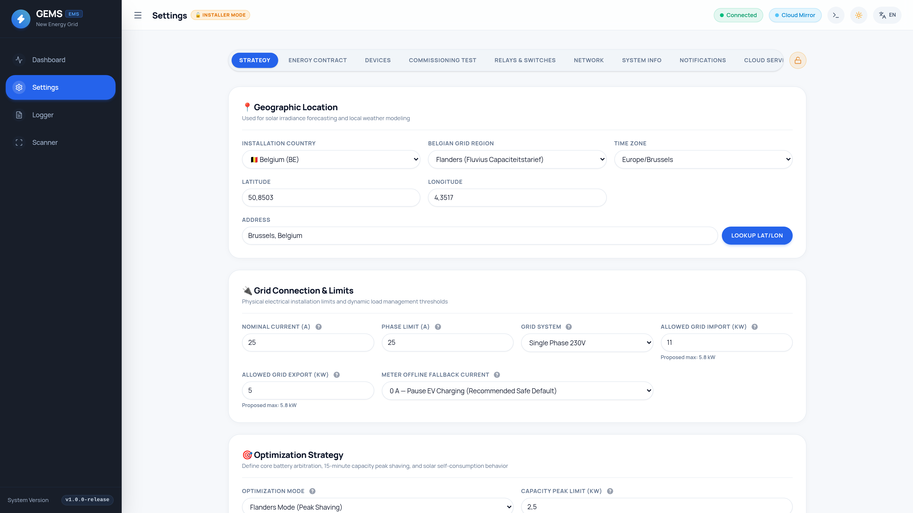
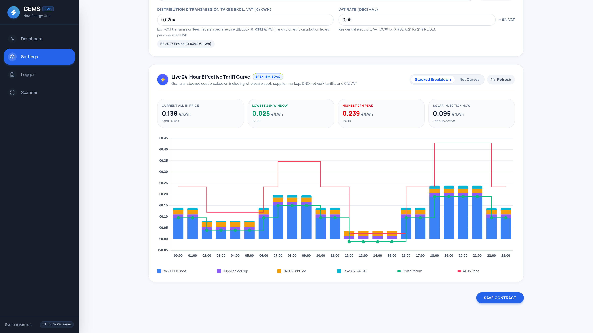
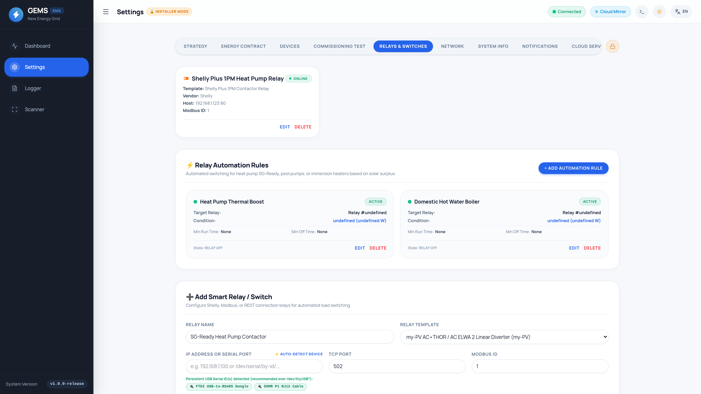

Configuratie- & Instellingenreferentie
Deze handleiding biedt een volledig overzicht van elke configuratieparameter in GEMS. Alle parameters werken rechtstreeks samen met de lokale regel-engine en worden uitsluitend via de webinterface ingesteld.
1. Optimalisatiestrategieën (`strategy_mode`)
De strategie-engine voert elke seconde een regelcyclus uit om zonne-omvormers, batterijopslag en EV-laadpalen optimaal op elkaar af te stemmen volgens uw gekozen doelstelling.


| Modus | Doelstelling | Primaire Stuuractie |
|---|---|---|
eco |
Maximaal Zon-zelfverbruik | Stuurt overtollige zonneproductie eerst naar de thuisbatterij, daarna naar EV-laadpalen en ten slotte naar thermische warmwaterrelais. Beperkt netafname/injectie niet tenzij arbitrageregels actief zijn. |
flanders |
Piekbewaking Capaciteitstarief | Bewaakt continu het voortschrijdend kwartiergemiddelde van de netafname. Knijpt dynamisch EV-laadpalen terug en ontlaadt de thuisbatterij om maandpieken te begrenzen. |
netherlands |
Zero-Export & Slim Salderen | Voorkomt terugleverkosten en boetes bij negatieve prijzen. Stuurt zonne-energie naar batterijen/laadpalen of regelt het omvormervermogen actief terug wanneer terugleveren verlieslatend wordt. |
2. Vlaamse Piekbewaking & Maandpiekopvolging (`flanders`)
In Vlaanderen wordt het capaciteitstarief berekend op basis van de hoogste kwartierpiek (gemiddeld afgenomen vermogen over 15 minuten) per kalendermaand, met een wettelijk basistarief van 2,5 kW.
Voorspellende Kwartierbudgetbewaking
In plaats van pas in te grijpen wanneer een kwartierpiek al overschreden is, volgt GEMS continu de reeds verbruikte energie binnen elk gesynchroniseerd klokkwartier. Gedurende de resterende minuten van het kwartier stuurt GEMS proactief laadpaalstromen, slimme relais en batterijontlading bij zodat het kwartiergemiddelde veilig onder uw ingestelde piekplafond min de veiligheidsmarge blijft.
GEMS registreert de hoogste gemeten kwartierpiek van de lopende kalendermaand in SQLite (/api/peaks/monthly). Ontstaat er een onvermijdelijke piek door niet-stuurbare huishoudtoestellen (bijv. 4,2 kW door kookplaat en oven tegelijk), dan verhoogt GEMS automatisch zijn operationele plafond naar 4,2 kW voor de rest van die maand. Zo laadt uw wagen sneller op zonder één cent extra capaciteitstarief te betalen!
Belangrijkste parameters voor Vlaamse piekbewaking
| Parameter | Type | Standaard | Beschrijving |
|---|---|---|---|
capacity_peak_limit_kw |
Float (kW) | 2.50 |
Harde bovengrens voor het gemiddelde kwartiervermogen uit het elektriciteitsnet. |
peak_shaving_buffer_w |
Integer (W) | 200 |
Veiligheidsmarge die van het doelplafond wordt afgetrokken om korte inschakelpieken op te vangen. |
peak_shaving_rampup_w |
Integer (W) | 500 |
Begrenst hoe snel teruggeschroefde toestellen (zoals laadpalen) weer mogen opschalen zodra de netbelasting daalt. |
3. Actieve Omvormerterugregeling & Bescherming van Vlaamse GSC
Bij een groot Europees overschot aan zon- en windenergie kunnen de uurtarieven op de EPEX Spot Day-Ahead-markt sterk negatief worden. Om te voorkomen dat gezinnen terugleverboetes betalen — terwijl oudere installaties met groenestroomcertificaten hun subsidies wél maximaal blijven benutten — beschikt GEMS over slimme drempelgestuurde terugregeling.
Parameters voor Terugregeling & Regio
| Parameter | Type | Standaard | Beschrijving |
|---|---|---|---|
region |
String | flanders |
Reguleringsgebied (flanders, brussels, wallonia of netherlands). |
allowed_grid_export_kw |
Float (kW) | 0.0 |
Maximale continue netinjectie. Stel in op 0.0 voor strikte zero-export in Nederland. |
active_inverter_curtailment |
Boolean | true |
Geeft de backend toestemming om via Modbus actieve vermogenslimieten (o.a. SunSpec WMaxLimPct) naar omvormers te sturen zodra terugleveren verlieslatend is. |
min_profitable_export_price |
Float (€/kWh) | 0.00 |
Basisinjectieprijs waaronder terugleveren aan het net als verlieslatend wordt beschouwd. |
gsc_value_eur_mwh |
Float (€/MWh) | 0.0 |
Waarde van Groenestroomcertificaten (GSC) in € per 1.000 kWh (bijv. 250 €/certificaat). Verlaagt evenredig de terugregeldrempel. |
Eigenaars in Vlaanderen met zonnepanelen gekeurd vóór 2021 ontvangen gegarandeerde groenestroomcertificaten (GSC). Ontvangt een installatie bijvoorbeeld €250/certificaat (€0,250/kWh), dan blijft zonneproductie rendabel bij negatieve spotprijzen tot wel -250,0 €/MWh (-€0,250/kWh)!
Voorbeeld: €0,00 - (€250 / 1000) = -€0,250/kWh (-250,0 €/MWh)
GEMS bevat directe snelkeuzeknoppen voor alle Vlaamse GSC-schijven: €0, €90, €210, €230, €250, €270, €330, €350 en €450/MWh. De omvormer wordt ENKEL teruggeregeld wanneer de negatieve injectieprijs hoger oploopt dan uw GSC-opbrengst.
4. Day-Ahead EPEX Spotprijs-arbitrage
GEMS haalt dagelijks om 14:00 CET automatisch de uurtarieven van de Day-Ahead elektriciteitsmarkt op voor alle Europese prijszones (EPEX Spot België, Nederland, Duitsland, Frankrijk en Luxemburg).
Strategieën voor Batterijladen uit het Net (`battery_grid_charge_strategy`)
price_only: Laadt de batterij vanuit het net zodra de uurprijs onderforce_charge_below_eurozakt; ontlaadt actief wanneer de prijs bovenforce_discharge_above_eurostijgt.super_dal_only: Beperkt netladen strikt tot extra voordelige superdal-uren binnen specifieke leverancierscontracten.hybrid: Combineert prijsdrempels met voordelige dalvensters van de energieleverancier.dynamic_forecast: De meest geavanceerde modus. Berekent een optimaal 24-uurs laadschema door EPEX-spotprijzen te combineren met Open-Meteo zonne-instralingsvoorspellingen en het basisverbruik van de woning (home_base_load_w).winter_fallback_enabled(Winter- / Weinig-zon-terugval): Wanneer de batterijstatus (SoC) tijdens winterdagen of bewolkt weer zakt tot of onderwinter_fallback_trigger_soc(standaard25%) en de verwachte zonne-opbrengst onvoldoende is, laadt GEMS de batterij automatisch bij tijdens dewinter_fallback_cheapest_hours(standaard2uren) goedkoopste uren van de dag totwinter_fallback_target_soc(standaard65%).
Om vroegtijdige batterijveroudering te vermijden, rekent GEMS uw ingestelde slijtagekost per cyclus (bijv. €0,05 / verwerkte kWh) mee in de rendementsberekening. Een arbitragecyclus wordt uitsluitend uitgevoerd wanneer het prijsverschil tussen laad- en ontlaaduur groter is dan het omzettingsverlies én de batterijslijtagekost samen.
5. Energiecontracten & Leveranciersformules
Voor een exacte berekening van uw werkelijke stroomkosten koppelt u in GEMS uw specifieke leveranciersformule rechtstreeks aan de dynamische EPEX-spotprijs.


Ondersteunde Regionale Leveranciersprofielen
| Leveranciersprofiel | Regio | Geconfigureerde Formuleparameters |
|---|---|---|
| TotalEnergies Pixel Dynamic | België | EPEX Spot BE doorgifte + factor (totalenergies_multiplier) + opslag (totalenergies_markup) + vaste vergoeding (totalenergies_base_fee). |
| Mega Smart / Cosy Dynamic | België | EPEX Spot BE + factor (mega_multiplier) + leveranciersopslag (mega_markup) + jaarabonnement (mega_base_fee). |
| Bolt Dynamisch | België | 100% lokale groene stroom met directe EPEX Spot BE-doorgifte en transparante platformvergoeding. |
| Engie Dynamic / Flextime | België | Directe EPEX Day-Ahead-doorgifte of tijdgebonden tariefvensters (piek, dal, superdal). |
| Vattenfall Nederland — FlexPrijs | Nederland | EPEX Spot NL-doorgifte (vattenfall_multiplier = 1.00, 15m- of 60m-afrekening) + inkoopvergoeding (vattenfall_markup = 0.0211 €/kWh) + vaste leveringskosten (vattenfall_base_fee = 95.40 €/jr) + wettelijke Nederlandse Energiebelasting excl. btw (2026: 0.09161 €/kWh / 2027: 0.08802 €/kWh) + 21% btw. |
| Luminus / Eneco / Frank / Ecopower | BE / NL | Aanpasbare lineaire factoren, keuze tussen 15m- en 60m-spotafrekening, teruglevermarges en vaste abonnementskosten. |
| Belgisch Tweevoudig & NL Post-2027 Vast | BE / NL | Dag-/nachttarieven met netbeheerderspresets, plus optionele Nederlandse post-saldering terugleverkosten (fixed_feed_in_cost_kwh) en controle op de wettelijke 2027–2029 minimumvergoeding (≥ 50% kaal leveringstarief). |
| Enovos Dynamic | Luxemburg | enovos_markup, enovos_multiplier, enovos_inject_multiplier en Creos-nettarieven. |
Voorinstellingen voor Netbeheerders (DNB) & Wettelijke Heffingen
GEMS bevat snelkeuzes excl. btw voor de regionale distributienettarieven en de wettelijke energieheffingen 2026/2027 per kWh:
- Nederland (Liander / Enexis / Stedin): Wettelijke Energiebelasting-presets excl. btw voor 2026 (€0,09161 / kWh) en 2027 (€0,08802 / kWh) + 21% btw.
- Fluvius (Vlaanderen): €0,0204 / kWh distributienettarief (plus 2027 federale accijns €0,0392 / kWh) + 6% btw.
- ORES & RESA (Wallonië — Vlak of CWaPE
Tarif Impact): Vlakke presets (€0,0950 / €0,0920 / kWh) of het officiële CWaPETarif Impact7d/7 (ECO01:00–07:00 & 11:00–17:00: RESA €0,0252 / ORES €0,0284;MEDIUM07:00–11:00 & 22:00–01:00: RESA €0,0755 / ORES €0,0812;PIC17:00–22:00: RESA €0,1258 / ORES €0,1345 / kWh) + 6% btw. - SIBELGA (Brussel): €0,0820 / kWh (plus 2027 federale accijns €0,0392 / kWh) + 6% btw.
6. 3-Fasige Load Balancing & Hoofdzekeringsbeveiliging
Om te voorkomen dat de hoofdautomaat van de woning aanspreekt, bewaakt GEMS continu de stroom per afzonderlijke fase ($L_1, L_2, L_3$) via 3-fasige P1-slimme meters of Modbus-netanalyzers.
| Parameter | Type | Standaard | Beschrijving |
|---|---|---|---|
grid_nominal_current_a |
Integer (A) | 32 |
Nominale waarde van de hoofdzekering (bijv. 25A, 32A, 40A of 63A). Regelt laadpalen direct terug zodra de totale belasting de zekering nadert. |
phase_limit_amps |
Float (A) | 25.0 |
Maximaal toegestane stroom op één individuele fase ($L_1, L_2 \text{ of } L_3$). Voorkomt overbelasting bij scheefbelasting. |
grid_system |
Enum | three_phase_400v |
single_phase_230v (monofasig), three_phase_400v (3x400V+N ster) of three_phase_230v (zonder nulleider / Belgisch 3x230V deltanaansluiting). |
7. Slimme Relais & SG-Ready Warmtepompautomatisering
Maak autonome schakelregels aan voor Shelly-relais, Modbus-contactoren en elektrische boilers onder Instellingen → Relais & Schakelaars.


Regelparameters
- Voorwaardetype:
solar_export_exceeds: Schakelt IN zodra de zonne-injectie naar het net de drempel overschrijdt (bijv. > 1500 W).grid_import_below: Schakelt IN wanneer de netafname onder de drempel blijft (bijv. < 200 W).price_below: Schakelt IN zodra de Day-Ahead stroomprijs onder de ingestelde grens daalt (bijv. < €0,05 / kWh).
min_run_time_seconds(Standaard: 300s): Houdt het relais minimaal 5 minuten ingeschakeld om pendelen en slijtage aan warmtepompcompressoren of contactoren te vermijden.min_off_time_seconds(Standaard: 300s): Dwingt een rusttijd van minimaal 5 minuten af vóór herinschakeling.
SG-Ready Warmtepomp 4-Standenmatrix
| SG-Ready Stand | Relais 1 (K1) | Relais 2 (K2) | Gedrag van de Warmtepomp |
|---|---|---|---|
| Stand 1: Blokkering (EVU-Sperre) | Gesloten | Open | Geforceerd UIT tijdens extreme piektariefuren (max. 2 uur aaneengesloten). |
| Stand 2: Normaal bedrijf | Open | Open | Werkt volgens de standaard interne stooklijn en kamerthermostaat. |
| Stand 3: Zonne-boost (Aanbevolen) | Open | Gesloten | Verhoogt de aanvoer- en boilertemperatuur om overtollige PV-stroom als thermische buffer op te slaan. |
| Stand 4: Maximale thermische opslag | Gesloten | Gesloten | Activeert maximaal compressorvermogen tijdens uren met negatieve stroomprijzen. |
8. Webhook-meldingen, E-mailrapporten & Diagnostische Logboeken

| Categorie | Parameter | Beschrijving |
|---|---|---|
| Meldingen | alert_webhook_url |
HTTP POST-eindpunt voor automatische waarschuwingen: kwartierpiek ≥ 90%, 3 opeenvolgende uitleesfouten bij een toestel of mislukte tariefophaling. |
| E-mailrapporten | weekly_report_enabled |
Schakelt automatische opmaak en verzending van het wekelijkse PDF-energierapport in of uit. |
| SMTP-server | smtp_host, smtp_port, smtp_username, smtp_password, smtp_sender, report_email |
Uitgaande SMTP-mailservergegevens voor het verzenden van PDF-energierapporten. |
| OTA-updates | github_token |
Optioneel Personal Access Token om op GitHub-releases te controleren zonder publieke API-limieten. |
| Systeemlogboeken | log_level |
Detailniveau van het logboek (INFO voor dagelijks gebruik, DEBUG voor uitgebreide foutopsporing). |
9. Centrale Cloud & GRID-EMS-SERVER Integratie
Configureer uitgaande telemetriespiegeling en vlootbeheer naar GRID-EMS-SERVER onder Instellingen → Cloudserver. Raadpleeg voor uitgebreide architectuurdetails en datapakketten de aparte GRID-EMS-SERVER Koppelingshandleiding.

| Parameter | Type | Standaard | Beschrijving |
|---|---|---|---|
cloud_enabled |
Boolean | false |
Schakelt uitgaande telemetriesynchronisatie met GRID-EMS-SERVER in of uit. |
cloud_server_url |
String (URL) | https://ems.newenergygrid.com |
Centrale cloudserver-URL. Kan ook verwijzen naar een eigen zakelijke serverinstantie. |
cloud_pairing_token |
String | Leeg | Eenmalig koppelingstoken gegenereerd in het centrale vlootportaal. |
cloud_serial_number |
String | Automatisch | Uniek serienummer van de edge-controller op basis van het hardware-ID (formaat: TCG-EMS-<asset_tag>, bijv. TCG-EMS-83daf13d05f1adad). |
cloud_sync_interval_sec |
Integer (s) | 5 |
Interval voor telemetrieverzending (2 tot 60 seconden). |